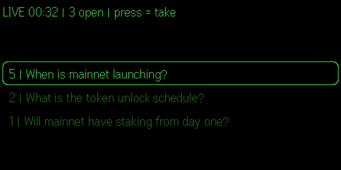
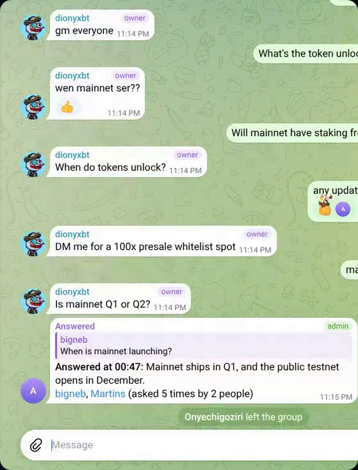
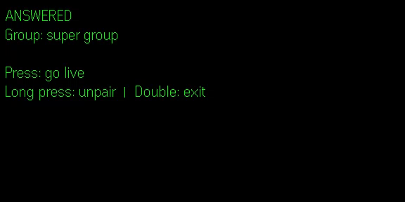
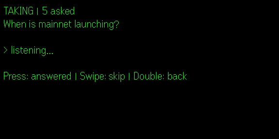
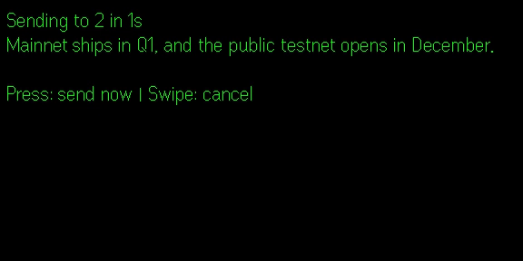
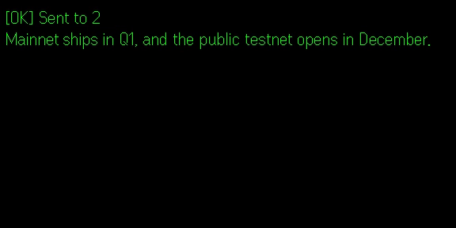
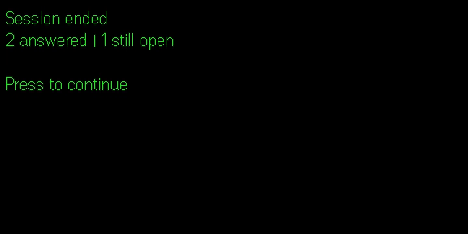

Answered puts your Telegram group's questions on your G2 display, merged and ranked. Take one with the ring, just answer it, and the bot replies in the group to everyone who asked.


One continuous take on the live server with two real Telegram accounts: the group on the left, the G2 display on the right. 2 min 51 s.
Pair once, press once to go live, then just talk.
The glasses show a 4-digit code. A group admin sends /pair 1234 to the bot. No accounts, no phone app.

Claude Haiku drops chatter and spam and merges repeats. One line per question, ranked by how many people asked.
Press to take the top question and answer out loud. The G2 mic streams to Deepgram as you speak.

Claude Sonnet checks you really answered it, quoting the transcript. You get a 2-second undo before anything is posted.

One threaded reply to the original message, with a summary and an @mention for every asker. Non-answers stay open.

A double press ends the session. The recap of what was answered and what is still open is posted and pinned.

Every action is one gesture, so your hands and eyes stay on the audience.
| Gesture | What it does |
|---|---|
| Press | Go live · take the selected question · mark it answered · send now |
| Swipe | Scroll the queue · skip a question · cancel a reply |
| Double press | Put a question back · end the session and post the recap |
| Long press | Flag spam: it leaves the queue and is deleted from the group |
From the scorecard in the repo, 3 runs against the real models.
Sideload answered.ehpk through Even Hub.
Add @answereddbot to your Telegram group as an admin.
Send /pair with the code on your glasses, then press the ring.
Heads up, hands free. Built for the Heads Up: Even Realities hackathon, Track 01.